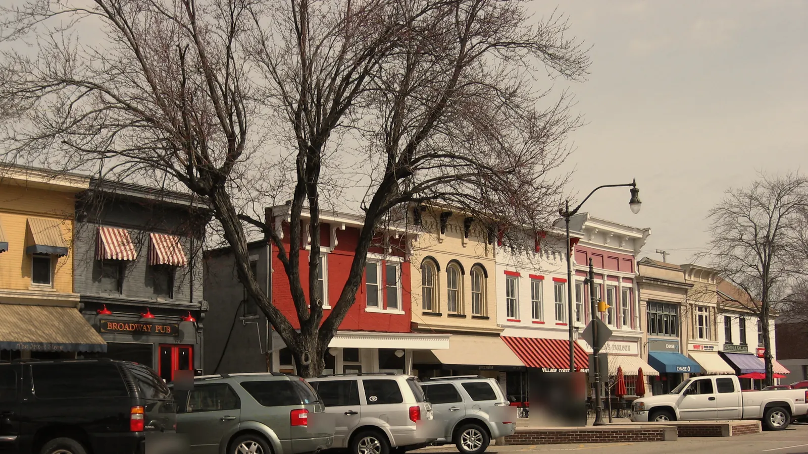
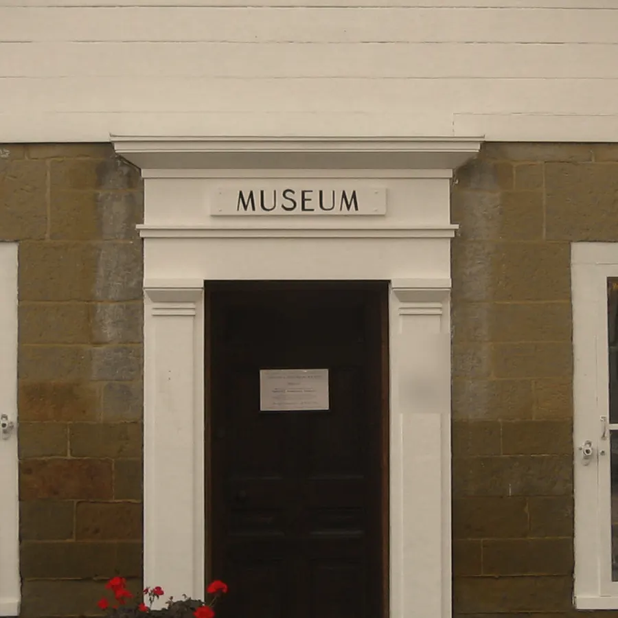
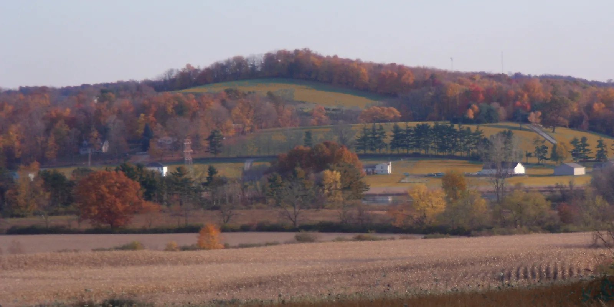

Everett Pryce
Granville, Ohio · Licking County
Old houses in a village built out of brick and clapboard, and land in the hills behind it. I can tell you what you are looking at.
About Everett
Before this I was a restoration carpenter.
For the better part of fifteen years I worked on old houses in this county and the counties either side of it: sash, sills, door casings, running trim, and putting back what a previous owner had taken off. It was close work, and most of what I know about how a house is assembled I learned with a piece of it in my hands.
People on the ladder next to me kept asking what the house was actually made of, and whether the one down the road was the same. Clapboard or board and batten, brick or stucco over brick, original sash or later. I turned out to be better at answering that than at the carpentry, and in due course the answering became the work.
I can name what you are looking at: the entablature, the sash pattern, the course of the brick, which parts of a façade are original and which are later. What condition any of it is in is a question for someone whose job that is, and I will make sure it gets asked early.
I work one village and the ground around it. I would rather know one street’s cornices and door surrounds properly than three towns vaguely, and I will say plainly when a house does not match what you have asked me for.

Why work with Everett
I can tell you what the house is made of.
Sash, sill, lath, course, framing: named and described.
The village is a built thing and I read it that way.
Why Broadway looks the way it does, which frontage came first and which came later, and what all that trim is called.
I will tell you when to walk.
Plainly, and before you are attached to it.
What you are looking at
Ten things you will see walking Broadway, and what they are called.
- Entablature
- The horizontal band carried above columns or pilasters, in three parts: architrave, frieze and cornice. It is the heavy level line over the doorways and porches of the Greek Revival buildings along Broadway.
- Cornice returns
- Where the cornice at the eaves turns the corner and runs a short way along the gable end instead of stopping dead. You see them on the older frame buildings in the village, hinting at a full pediment without building one.
- Pilaster
- A flat column standing only slightly proud of the wall, with a base and a capital like the real thing. Its job is to make a wall or a door surround read as classical. Look for them at corners and around front doors on the Greek Revival frontages.
- Sidelights
- The narrow fixed windows on either side of a front door, usually running its full height, which bring daylight into the hall behind it. You see them on Greek Revival entrances here, often with a transom above.
- Fanlight
- A half-round or half-elliptical window over a door, its glazing bars spreading like an opened fan. It is the signature of a Federal entrance, and you will find it on some of the earlier brick houses in the village.
- Six-over-six sash
- A window divided into six panes of glass in the upper half and six in the lower. It is what you are looking at on most of the older houses here, and the pane size is often the quickest clue to roughly how old a window is. What condition a particular one is in is a different question, and one for somebody whose job that is.
- Clapboard
- Long thin boards laid horizontally, each one lapping the board below. Most of the white-painted frame buildings here are sheathed in it. I can tell you that it is clapboard and what it is made of. What shape it is in is a question for someone whose job that is, and I will make sure it gets asked early.
- Brick course
- One horizontal row of brick. The pattern the courses make is called the bond. Flemish bond, which alternates the long and short faces of the brick along each row, turns up on Federal work in the village and is worth learning to spot.
- Federal
- The style of the early republic: light, flat and careful, with fanlights, slender trim and brick laid in a fine bond. In Granville it belongs to the earlier nineteenth-century buildings.
- Greek Revival
- The style that followed, built on the proportions of Greek temples: low pediments, heavy entablatures, columns and pilasters, usually painted white. It sits alongside later Gothic Revival on the same street, so Broadway is a mix and not a set.

The village and the hills
Broadway
Broadway is the main street and the backbone of the village: brick and clapboard, Greek Revival and Federal frontages with later Gothic Revival among them, set under mature street trees.
The hill
On the hill above the village is Denison University, founded in 1831: the building line you see from Broadway, and one of the larger employers in the county.
White paint and trim
Greek Revival frames and trim, painted white, with the cornices and pilasters this site is drawn from. The National Register nomination for the village names St. Luke’s Episcopal Church among its landmarks.
The hills and the farmland
Rolling country runs out on every side. Welsh settlers took up land in these hills in the early years, and a larger group from Massachusetts and Connecticut founded the village, which is why it still looks more like New England than most of Ohio. Autumn color runs deep here, and late in the year the light comes long and low across the tree lines.
Buying and selling
Buying
- The street first
- We talk about the street and the kind of house before we talk about any particular house.
- Walk it properly
- We walk places more than once, and I name what is there as we go.
- The list, early
- The condition questions go on the list early and in front of the people whose job they are, and I stay on it through to close.
Selling
- Say what it is
- The house is described accurately. The right name for the right feature sells an old house better than an adjective does.
- Show the fabric
- We photograph and list it so the materials read.
- The follow-through
- I handle the inquiries, the showings and everything after them.
Ask me one question
One question about a street, a house or the hills is a perfectly good reason to write. You do not have to be ready to do anything.